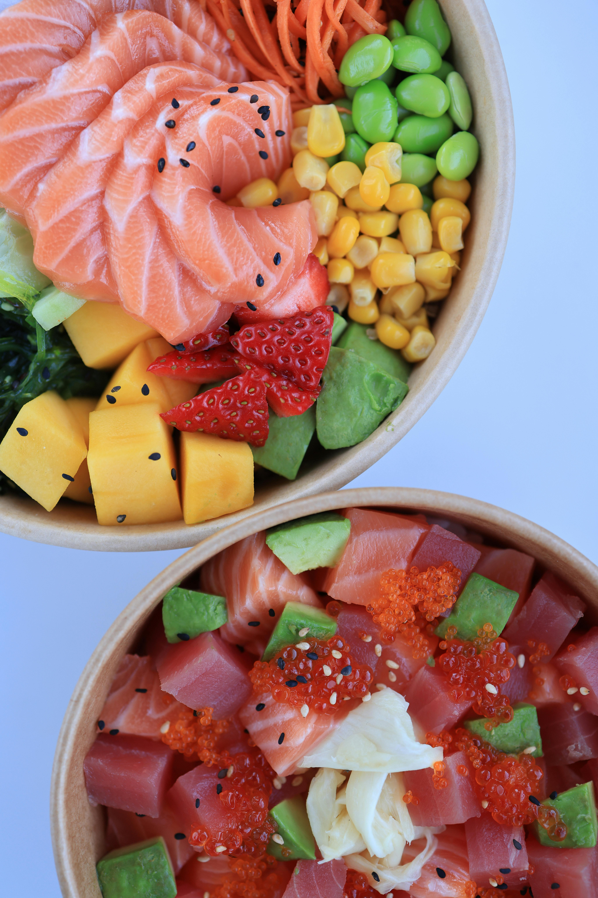
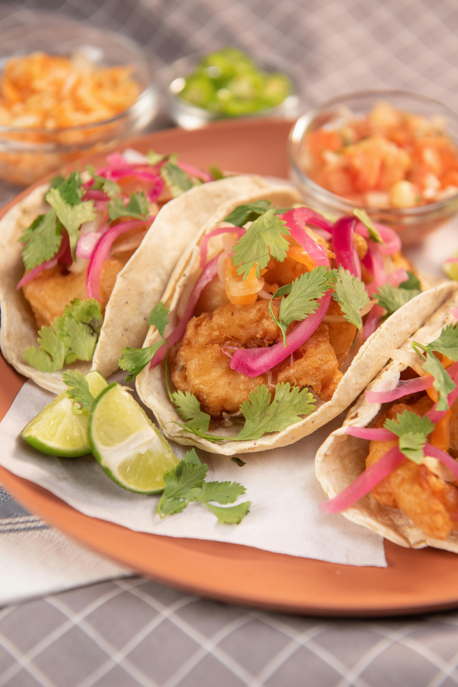

Nuestros Bowls & Ensaladas

Ingredientes orgánicos seleccionados cada mañana. Queremos cuidarte desde adentro. Conocé a nuestros productores.

Ingredientes orgánicos seleccionados cada mañana. Queremos cuidarte desde adentro. Conocé a nuestros productores.

La opción perfecta para un almuerzo rápido y nutritivo, combinando proteínas y vegetales frescos en un formato práctico.